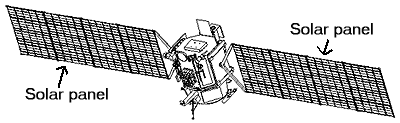

.jpg)
What are Solar Panels?
Christiano RodriguezOCT 3, 2019
Solar panels are devices that convert light into electricity. They are called "solar" panels because
most of the time,
the most powerful source of light available is the Sun, called Sol by astronomers. Some scientists call
them
photovoltaics which means, basically, "light-electricity."

Figure from NASA's Jet Propulsion Laboratory Deep Space One Web Site: http://nmp.jpl.nasa.gov/ds1/
A solar panel is a collection of solar cells. Lots of small solar cells spread over a large area can
work together to
provide enough power to be useful. The more light that hits a cell, the more electricity it produces, so
spacecraft are
usually designed with solar panels that can always be pointed at the Sun even as the rest of the body of
the spacecraft
moves around, much as a tank turret can be aimed independently of where the tank is going.
DS1's solar cells are even more efficient than regular solar panels made for satellites because they use
solar
concentrators.